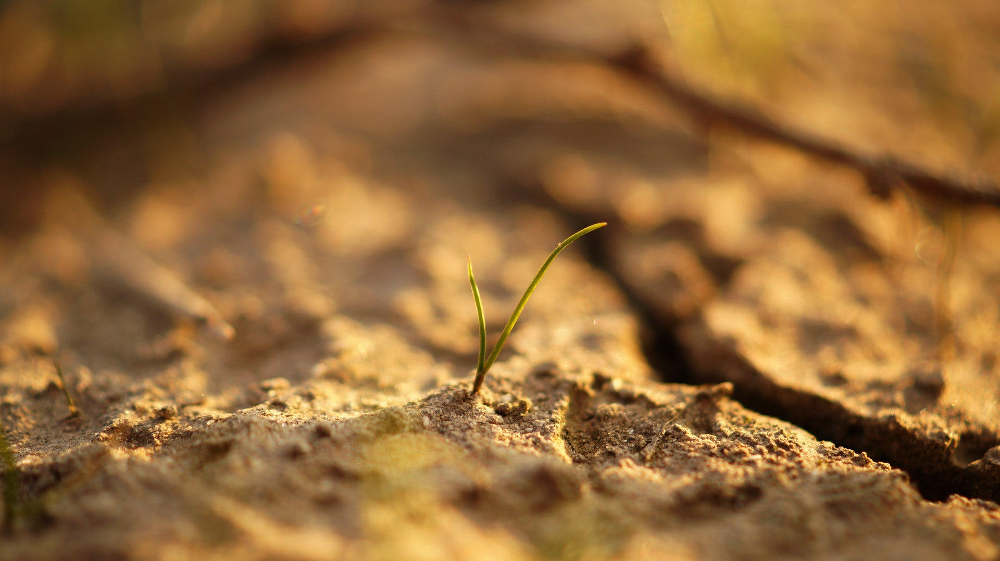

Transgenerative Bewusstseins
Manche von uns haben ihn nie wirklich gekannt,
manch anderen ist er irgendwann abhanden gekommen …
…der Boden unter den Füßen!
manch anderen ist er irgendwann abhanden gekommen …
…der Boden unter den Füßen!
- Er ist das Fundament, auf dem unser Leben steht, die Erde, in die wir unsere Wurzeln schlagen.
- Er ist die Verbindung zu unserer Vergangenheit und unseren Vorfahren, die Kenntnis unserer Ressourcen und Talente und das Vermögen, sie für uns zu nutzen.
- Er ist das Selbst - Bewusstsein, das Wissen darum, wer wir im Kern unseres Wesens sind und die innere Kompassnadel, die uns auf unserem Weg die Richtung weist.


- Er ist das Selbst - Vertrauen, das innere Wissen, dass wir an den Herausforderungen im Leben wachsen können.
- Er ist die Beziehung zu uns selbst und der Schlüssel zu guten, tragfähigen Beziehungen zu anderen Menschen.
- Er ist die wachsende Zuversicht, in allen Wetter - und Unwetterlagen vom Leben getragen zu sein.
Methoden
Transgenerative Körper - und Bewusstseinsarbeit
Unsere Vorfahren hinterlassen uns ebenso wie ein körperliches auch ein emotionales und geistiges Erbe. Erfahrungen, die sie in ihrem Leben nicht verarbeiten konnten, werden unbewusst an nachfolgende Generationen weitergegeben und können sich auf unser gegenwärtiges Leben auswirken. Über die verschiedenen Kommunikationskanäle - verbal, gestisch, mimisch, über emotionale Felder, craniosacrale Rhythmen etc. - kann hervortreten, was sonst in den Tiefen des Unterbewusstseins verborgen bleibt. Erst dann können sie von uns bearbeitet und aufgelöst werden.
Kinesiologischer Muskeltest
Der kinesiologische Muskeltest dient im Zuge des Prozesses einer Behandlung als Wegweiser. Wir lassen uns von ihm leiten und folgen denjenigen Informationen, die für wirkliche Weiterentwicklung und Transformation aus dem Inneren von Bedeutung sind.
Craniosacrale Arbeit
Dabei verwende ich meine Hände, um über craniosacrale Rhythmen in Kommunikation mit dem Körper zu treten. Der Körper kann so seine „Geschichte erzählen“ und bekommt die Impulse und den notwendigen Halt, der Veränderung ermöglicht.
Über mich
- Studium Gesangspädagogik an der MDW und Bewegung und Sport/Musikerziehung an der Uni Wien.
- Langjährige Tätigkeit als Sängerin, Gesangspädagogin, Chorleiterin, Schauspielerin Seit 2009 intensive Beschäftigung mit körpertherapeutischen Methoden.
- 2012 Ausbildung in Cranio Fluid Dynamics / Ontologische Kinesiologie.
- 2016 Ausbildung in Being Human Constellation (Aufstellungsarbeit) Seit 20?? laufende Fortbildung in Transgenerativer Körperarbeit bei Dr. Regine Abraham.
MMag. Barbara Schandl
Kontakt
Email: barbara.schandl@hotmail.com
Adresse: etwasgasse 785/3420
Tel: +4368867429512